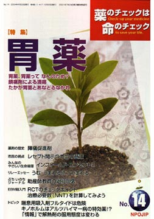

No.14 特集 胃薬 2004年4月 発行
 食べ物の消化吸収という、わたしたちの日常生活と密接に結びついている胃腸。ところが、「医者の処方でこれまで使われてきた胃潰瘍の薬が本当は効いていなかった」ということが新聞に載って話題になりました（注1）。国の研究班が作成した『EBMに基づく胃潰瘍診療ガイドライン』（じほう、2003年4月発行）によると、ごく普通に処方されてきた胃潰瘍の薬の評価が低いのです。医者が処方してきた胃潰瘍の薬が効かないのなら、市販されている胃薬は効くのでしょうか？ 胸焼けや胃もたれしないために、「お酒の前に飲む薬」が宣伝されていますが、これは本当に効くのでしょうか？ コンビニエンスストアなどでも買えることになる胃腸薬は効くのでしょうか。害はないのでしょうか。
今回は、胃腸薬のうち、胃薬に焦点をあてて、消化器病が専門でNPO法人医薬ビジランスセンター理事でもある谷田憲俊さんに聞きました。
（腸の薬については次号で特集します）
（注1） 例えば、2004年1月22日、朝日新聞
もくじ
特集
■胃薬、胃薬ってなんのため？
■鎮痛剤による潰瘍
■たかが胃薬とあなどるなかれ
■前号特集「不安パニック障害くすり」への投稿（補足）
連載
■映画の中のクスリ（7） 吸入麻酔剤
■みんなのやさしい生命倫理 １４
インフォームド・コンセント（２） 患者・医師関係
■リレーエッセイ うむ・うまれるにつつまれる
■薬害の歴史（9） 陣痛促進剤
■Coffee無礼区
■ぷちいのちジャーナル
助産師教育の退行現象
■市民の視点 レセプト開示の本当の意味
■EBM超入門（3）
RCTのチェックポイント 治療必要数（NNT）を計算してみよう
トピック
■１ 喘息用吸入剤フルタイド（一般名フルチカゾン）は危険
■２ キノホルムはアルツハイマー病の特効薬
■３ 「情報」で解熱剤の服用態度は変わる
提言
■NPOJIPの提言
HARLOT社は日本でも活躍中
■質問箱
Q1:気管支喘息のステロイド量は？
Q2:安定剤をやめたい
■読者の声
・「パキシルを止めたい」
・「本誌を手に薬や医師を判断」
・「薬剤師に社会的信用はあるか？」
・「コレステロール値を下げ続けていました」 など
■書評
・『市民のための疫学入門 医学ニュースから環境裁判まで』
・『ある日、化学物質過敏症』
・『薬の診察室 薬と毒の見分け方』
■NPOJIP関連書籍/TIP出版物
■NPOJIP書籍申込み用紙
■編集後記
病院でよく聞く言葉
（特集にちなんだ言葉を簡潔に解説）忙しい人はまずここから
○H2ブロッカー −胃酸を抑えて粘膜を保護
○レセプト −請求すれば原則開示
○腹腔鏡手術 −利便性と危険を比べて選択
○インフォームド・コンセント −普段の診療でも重要
（日本経済新聞に浜六郎が掲載していたものを改変。加筆、新しく追加したものを含む）
トピックより
喘息用吸入剤フルタイド（一般名フルチカゾン）は危険！
本誌12号「質問箱（ｐ72）」で扱った大村医師からの質問は「ステロイド外用剤は危険であるのに、喘息にはステロイド吸入剤が第一選択となっている。どうちがうのか」というものでした。「今はまだ、害よりは益の方が大きいが、近いうちにも、害の方が心配になる可能性があります」と答えました。早速、大きな害があることがわかりました。といっても、ステロイド吸入剤はすべてではなく、特定のもの。具体的にはフルチカゾン（商品名フルタイド）だけが危険ということです。
当センター正会員の小児科医（高松医師）から、ある論文（Toddら、Arch Dis Child 2002;87:457-461）の解釈について相談がありました。その論文は驚くべきものでした。
（以下、引用省略）
詳しくは本誌で。